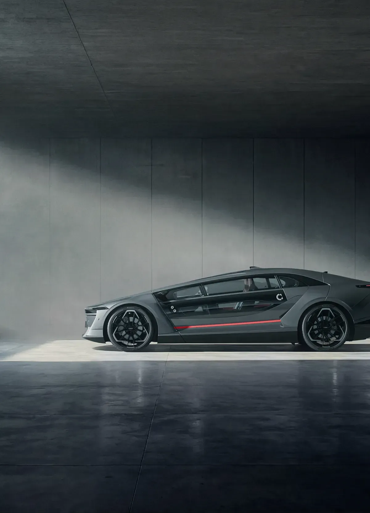
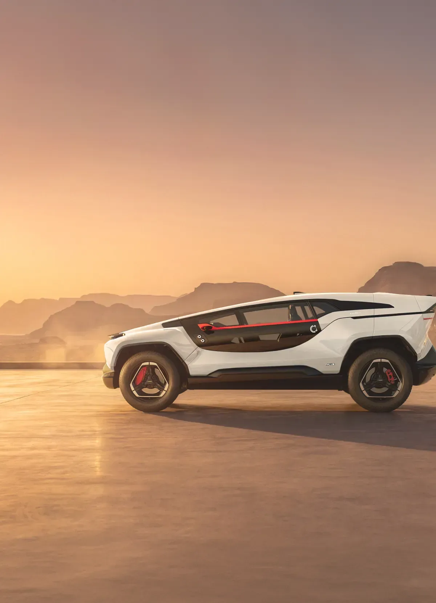
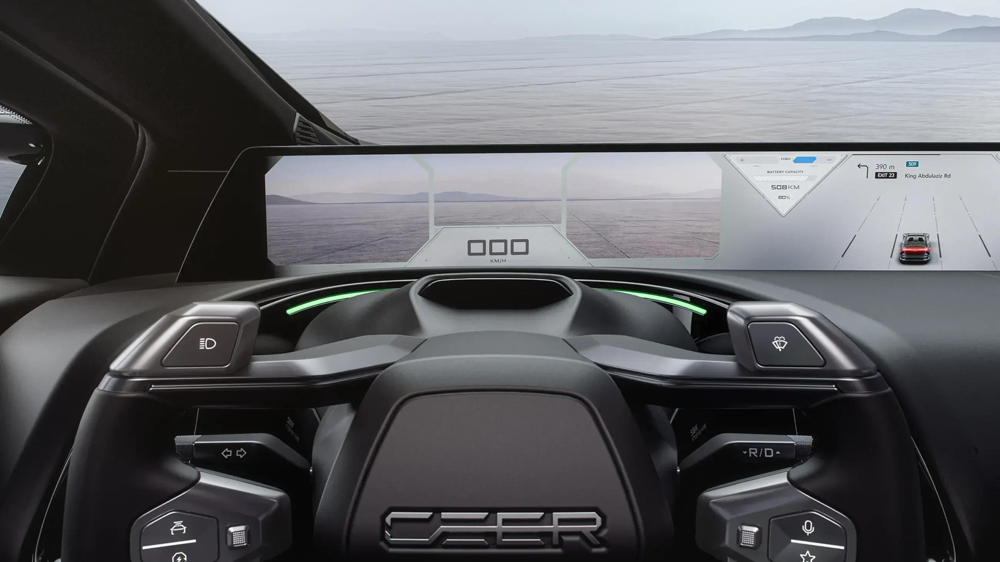
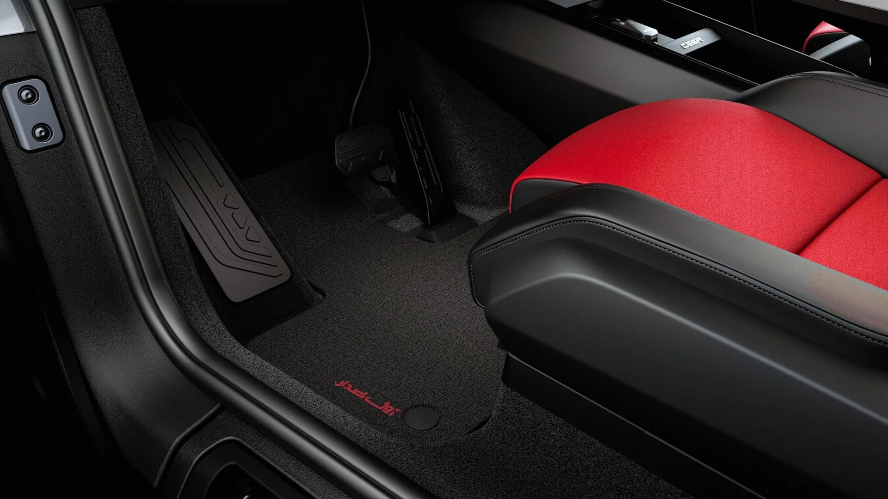

▲ 사우디 국영 전기차 브랜드 시어가 공개한 플래그십 전기차 '엑소봇' 세단 ⓒ CEER Motors
산유국 사우디아라비아가 자동차 강국을 자처하고 나섰다. 2026년 9월 21일(현지시간) 사우디 국영 전기차 브랜드 시어(CEER)가 왕압둘라경제도시(KAEC) 제조단지에서 플래그십 전기차 '엑소봇(EXOBOT)' 세단과 SUV를 공식 공개했다. 무함마드 빈 살만 왕세자가 직접 참석해 베일을 벗겼다.
숫자부터 예사롭지 않다. 최고 사양 기준 1,111마력, 정지 상태에서 시속 100㎞ 도달까지 걸리는 시간은 세단이 2.1초에 불과하다. 여기에 위로 열리는 걸윙도어까지 더해지며 공개 직후 전 세계 자동차 매체의 시선을 끌었다. 대만 폭스콘이 전기·전자 아키텍처를 설계하고, 독일 BMW가 엔지니어링 기술을 지원했다는 협업 구조도 화제의 중심에 섰다.
1. 엑소봇 공개 개요 — 사우디 첫 자국 브랜드의 첫 양산 전기차
엑소봇은 시어가 2030년까지 선보이겠다고 밝힌 7개 차종 라인업의 첫 번째 모델이다. 시어는 2022년 11월 사우디 국부펀드(PIF)와 대만 폭스콘의 합작으로 출범한 브랜드로, 이번 엑소봇 세단·SUV는 사우디 현지에서 디자인과 엔지니어링을 주도하고 KAEC 공장에서 전량 양산하는 자국산 전기차라는 점에서 상징성이 크다.
| 항목 | 세단 | SUV |
|---|---|---|
| 최고출력 | 최고 1,111마력 · 최대토크 1,500Nm (3모터 AWD) | |
| 제로백(0→100㎞/h) | 2.1초 | 2.4초 |
| 최고속도 | 250㎞/h | 210㎞/h |
| 배터리 | 112kWh, 800V 시스템 · 10~80% 충전 30분 이내 | |
| 1회 충전 주행거리 | 약 670㎞ | 약 560㎞ |
📍 850마력과 1,111마력, 왜 숫자가 다를까
이는 매체마다 다르게 보도한 오차가 아니라 트림 차이다. 공개 초기 인도되는 한정판 '퍼스트 에디션'은 3모터 합산 850마력·1,000Nm에 제로백 세단 2.6초·SUV 2.9초를 낸다. 이후 뒤따르는 고성능 트림은 최고 1,111마력·1,500Nm까지 끌어올려 제로백을 세단 2.1초·SUV 2.4초로 단축한다. 즉 두 수치 모두 CEER이 공식 발표한 값으로, 어느 트림을 기준으로 인용했는지의 차이일 뿐이다.
시어 공식 홈페이지에서 엑소봇의 상세 사양과 트림 구성을 직접 확인할 수 있다. CEER Motors 엑소봇 페이지 바로가기
2. 파격 디자인 — B필러를 지운 '샤힌 윙도어'
엑소봇에서 가장 먼저 눈에 띄는 것은 문이다. 앞뒤 도어 사이의 B필러를 없애고, 도어 전체가 하늘을 향해 위로 열리는 걸윙 방식을 채택했다. 시어는 이를 매의 일종인 '샤힌(Shahin)'의 날갯짓에서 영감을 받았다며 '샤힌 윙도어'라는 이름을 붙였다. 길이 약 3m에 이르는 도어 패널이 60㎝ 호를 그리며 열리는데, 필러 없이도 구조적 강성을 확보하기 위해 고강도 소재를 도어와 차체 접합부에 집중적으로 투입했다.

▲ 세단과 같은 걸윙도어 구조를 그대로 이어받은 엑소봇 SUV ⓒ CEER Motors
실내에서는 전면 유리 하단을 가로지르는 48인치 디지털 호라이즌 디스플레이와 요크(yoke) 형태의 스티어링, 스티어 바이 와이어 기술이 적용됐다. 기계식 조향 컬럼을 없앤 만큼 실내 공간 활용도를 높였고, 현재 양산차 가운데 가장 넓은 축에 속하는 글래스 루프도 특징으로 꼽힌다.

▲ 요크형 스티어링과 48인치 디지털 호라이즌 디스플레이가 적용된 엑소봇의 실내 ⓒ CEER Motors
✅ 엑소봇 디자인 포인트
· B필러 삭제, 3m 길이 걸윙도어('샤힌 윙도어') — 60㎝ 호를 그리며 개방
· 48인치 디지털 호라이즌 디스플레이가 전면 유리 하단을 가로지름
· 요크형 스티어링 + 스티어 바이 와이어로 기계식 조향 컬럼 삭제
· 중동 고온 기후를 고려한 열 반사 코팅 윈드실드 적용
· 스피커 대신 표면을 진동시켜 소리를 내는 서피스 익사이터 음향 시스템
3. 폭스콘·BMW 협업 구조 — 누가 무엇을 맡았나
엑소봇을 만든 것은 시어 혼자가 아니다. 완성차 제조 경험이 전무했던 사우디가 짧은 시간에 고성능 전기차를 양산 단계까지 끌고 온 배경에는 여러 글로벌 기업의 역할 분담이 있다.
| 기업 | 역할 |
|---|---|
| 폭스콘(대만) | 전기·전자(E/E) 아키텍처 설계 — 자사 폭스트론 전기차 플랫폼과 공유되는 기반 기술 제공 |
| BMW(독일) | 2022년 체결한 기술 라이선스 계약을 바탕으로 차량 개발 과정의 엔지니어링 기술 지원 |
| 리막 테크놀로지(크로아티아) | 후륜 전기 구동 유닛(모터) 공급 |
| 현대트랜시스(한국) | 전륜 모터 공급 |
| 신영 등 부품사(한국·미국·독일·중국) | 리어(美)·벤텔러(獨)·팡신(中)·신영(韓) 등이 KAEC 현지에 부품 공장을 구축 |
📍 BMW는 부품이 아니라 '기술'을 팔았다
BMW의 참여 방식은 흔히 생각하는 부품 공급이나 플랫폼 공유와는 다르다. 외신에 따르면 BMW는 파워트레인 부품을 직접 대는 대신 기술 라이선스 형태로 엔지니어링 노하우를 시어에 제공했다. 2022년 시어 출범 당시 체결된 이 협약이 이번 엑소봇 개발의 기술적 토대가 됐다는 것이 업계의 대체적인 설명이다.
국내 매체의 부품사 참여 관련 보도를 통해 더 자세한 내용을 확인할 수 있다. 글로벌이코노믹 기사 바로가기
4. 사우디 비전2030과 전기차 생태계 — 석유 이후를 준비하는 방식
시어의 등장은 단순한 신차 출시가 아니라 국가 전략의 일부다. 사우디는 원유 의존 경제에서 벗어나기 위한 '비전 2030' 아래 제조업·관광·엔터테인먼트 등 비석유 산업을 집중 육성해왔고, 자동차 산업은 그 핵심 축 가운데 하나로 꼽힌다.
✅ 시어·비전2030이 내건 목표
· 2034년까지 사우디 GDP에 약 80억 달러 직접 기여 목표
· 같은 기간 무역수지 개선 효과 약 210억 달러 전망
· 직·간접 일자리 약 3만 개 창출 기대
· 부품 현지화율 2034년까지 45%까지 확대
· 2028년부터 걸프 인접국, 2034년까지 중동·북아프리카 전역으로 판매망 확장
KAEC 제조단지는 홍해 인근에 조성된 사우디의 대표적 산업 신도시로, 시어는 이곳에서 엑소봇을 시작으로 2028~2030년 사이 대중형 모델 5종을 추가로 선보이고, 플러그인 하이브리드·내연기관 모델까지 라인업을 넓힐 계획이다. 첫 판매 시장은 사우디 국내와 걸프협력회의(GCC) 인접국으로 한정된다.

▲ 아랍어 로고를 새긴 카펫 등 현지화 디테일이 담긴 엑소봇 실내 ⓒ CEER Motors
5. 현대차·기아 등 기존 업체에 주는 시사점
중동은 현대차·기아를 비롯한 글로벌 완성차 업체들에게 이미 중요한 시장이다. 사우디는 GCC 최대 자동차 시장으로 꼽히며, 현대차·기아도 현지 판매 비중이 작지 않다. 시어의 등장은 이 시장에 처음으로 '자국 브랜드'라는 변수를 던져 넣었다는 점에서 의미가 다르다.
📍 당장의 위협보다 '신호'로 봐야 한다는 시각도
업계에서는 엑소봇이 초기에는 소량 생산되는 고성능 플래그십인 만큼 대중 판매 모델과 곧바로 경쟁하지는 않을 것이라는 분석도 나온다. 다만 사우디 정부가 자국 브랜드에 세제 혜택이나 공공 조달 우선권 등을 부여할 가능성이 거론되며, 2028년 이후 대중형 라인업이 본격화되면 상황이 달라질 수 있다는 경계도 함께 제기된다.
✅ 지켜봐야 할 지점
· 시어의 대중형 모델(2028~2030년 출시 예정) 가격대와 물량
· 사우디 정부의 자국산 차량 우대 정책 도입 여부
· 폭스콘의 전기·전자 아키텍처가 다른 지역 파트너십으로 확장될 가능성
· 현대차·기아 등 기존 업체의 중동 현지 생산·투자 대응 전략
6. 요약
사우디 국영 전기차 브랜드 시어가 플래그십 전기차 '엑소봇' 세단·SUV를 공개했다. 최고 1,111마력, 제로백 2.1초라는 수치와 함께 B필러를 없앤 걸윙도어 디자인이 화제를 모았다. 폭스콘이 전기·전자 아키텍처를, BMW가 엔지니어링 기술을 지원했고 리막·현대트랜시스 등 글로벌 부품사도 힘을 보탰다.
이는 사우디 '비전 2030'이 내건 산업 다각화 전략의 상징적 결과물이기도 하다. 시어는 2034년까지 GDP 기여, 일자리 창출, 부품 현지화 목표치를 내걸고 2030년까지 7개 차종 라인업을 구축한다는 계획이다.
2027년 초 양산이 시작되면 우선 사우디와 인접 걸프 지역에서 판매된다. 아직은 소량 생산되는 플래그십 단계지만, 2028년 이후 대중형 모델이 나오기 시작하면 중동 시장에서 입지를 다져온 현대차·기아를 포함한 기존 업체들도 이 흐름을 예의주시할 필요가 있다.